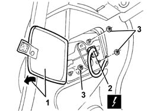
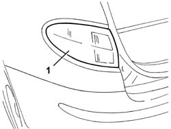

5540A56 dipped/main beam electrical wiring - check component operation, line continuity and repair contacts - includes relay replacement if necessary
- Path
- Procedures > 55 ELECTRICAL EQUIPMENT > 5540 EXTERIOR LIGHTING > 5540A lighting > 5540A56 dipped/main beam electrical wiring - check component operation, line continuity and repair contacts - includes relay replacement if necessary
- Kind
- repair procedure (removal / refitting; the operation number is the code)
- Applies to
- all engines; all production periods
- Interactive page
- https://sloeber94.github.io/elrnDB-a147/en/#/3025547
Applies to: all engines; all production periods
 Removing
Removing
 Refitting
Refitting5580T30 Bose sound system' SUBWOOFER - R.R. (left side only)
1. Open the rear light cluster access flap.
2. Disconnect the electrical connections.
 | Name | Connector |
|---|---|---|
2 | Left. rear( light cluster on fixed part) |
| Name | Connector |
|---|---|---|
2 | Right. rear light cluster (fixed part) |
3. Unscrew the nuts.

Applies to: all engines; all production periods
1. Remove the tail-light.

Applies to: all engines; all production periods
Refitting
RemovingCheck that the light cluster is not damaged.
Position the tail-light and secure with the nuts.
Connect the electrical connection
Close the rear light cluster access flap.
Check the operation of the rear light cluster lights.
5580T30 Bose sound system' SUBWOOFER - R.R. (left side only)
Topics linked from this page (3)
- 5580T30 Bose sound system' SUBWOOFER - R.R.
- F30 Left. rear( light cluster on fixed part)
- F31 Right. rear light cluster (fixed part)
Topics that link to this page (7)
- I01 SIDE LIGHTS/NO. PLATE LIGHTS NOT WORKING
- I10 DIRECTION INDICATORS / HAZARD WARNING LIGHTS / NOT WORKING
- I11 DIRECTION INDICATORS / HAZARD WARNING LIGHTS / NOT WORKING INTERMITTENTLY
- I15 (SIDE) BRAKE LIGHTS NOT WORKING
- V02 PASSENGER COMPARTMENT, REAR AREA WATER PENETRATION
- 5540A44 l/h or r/h tail light (one) - r+r
- 5540A50 tail-light bulb (one), lh or rh - replace